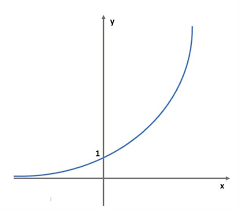
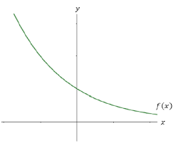

Crescimento e descrescimento de funções
O crescimento e o decrescimento de funções são conceitos importantes na análise matemática que descrevem como os valores de uma função mudam à medida que a variável independente (geralmente denotada por "x") varia dentro do domínio da função. Esses conceitos ajudam a compreender o comportamento geral de uma função em relação à sua variação e são frequentemente usados para analisar o comportamento de funções em diversas aplicações.
Uma função é considerada crescente em um intervalo se, à medida que os valores de x aumentam nesse intervalo, os valores correspondentes da função também aumentam. Em outras palavras, a inclinação da curva da função é positiva nesse intervalo.
Matematicamente, uma função f(x) é crescente em um intervalo I se, para quaisquer dois valores x1 e x2 onde x1 < x2, temos f(x1) < f (x2).
Graficamente, a curva da função tem uma inclinação positiva, subindo da esquerda para a direita.
Uma função é considerada decrescente em um intervalo se, à medida que os valores de x aumentam nesse intervalo, os valores correspondentes da função diminuem. A inclinação da curva da função é negativa nesse intervalo.
Matematicamente, uma função f(x) é decrescente em um intervalo I se, para quaisquer dois valores x1 e x2 em I onde x1 > x2, temos f(x1) > f(x2).
Graficamente, a curva da função tem uma inclinação negativa descendo da esquerda para a direita.
É importante notar que uma função pode ser crescente em alguns intervalos e decrescente em outros. Também é possível que uma função seja constante em um intervalo, o que significa que seus valores não mudam com a variação de x nesse intervalo.
Para determinar o crescimento ou decrescimento de uma função, você pode analisar a derivada da função (taxa de variação instantânea). Se a derivada for positiva em um intervalo, a função é crescente nesse intervalo. Se a derivada for negativa, a função é decrescente.